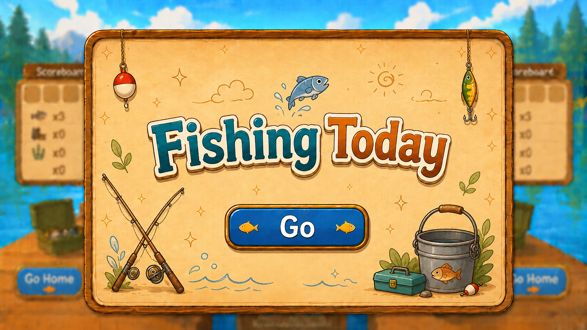
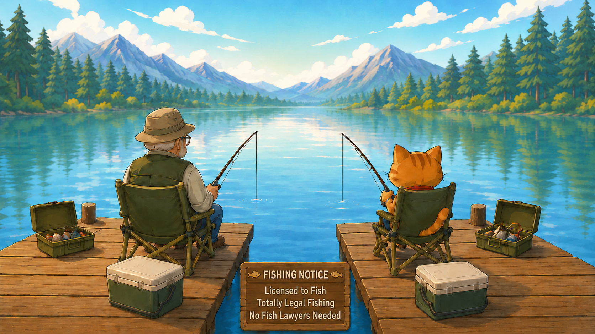
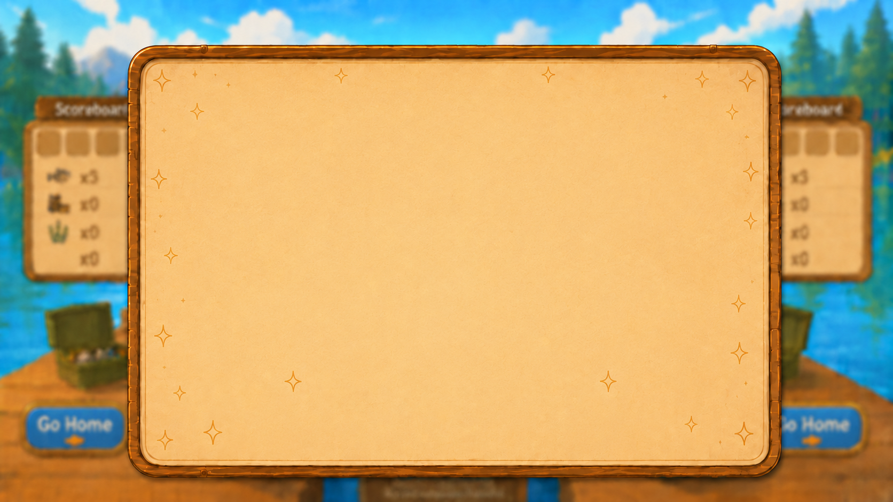
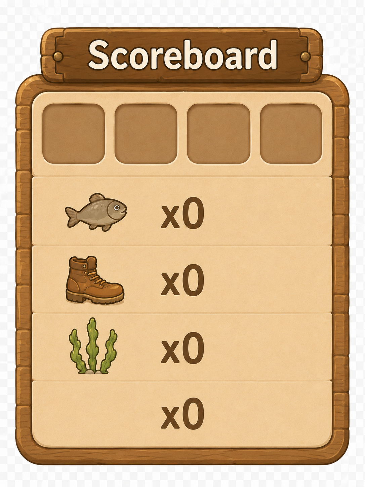
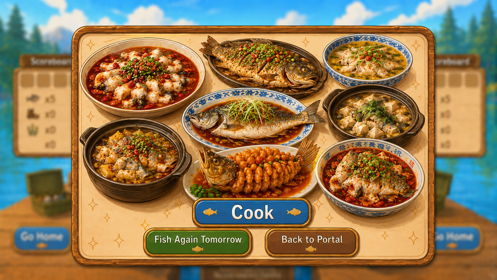
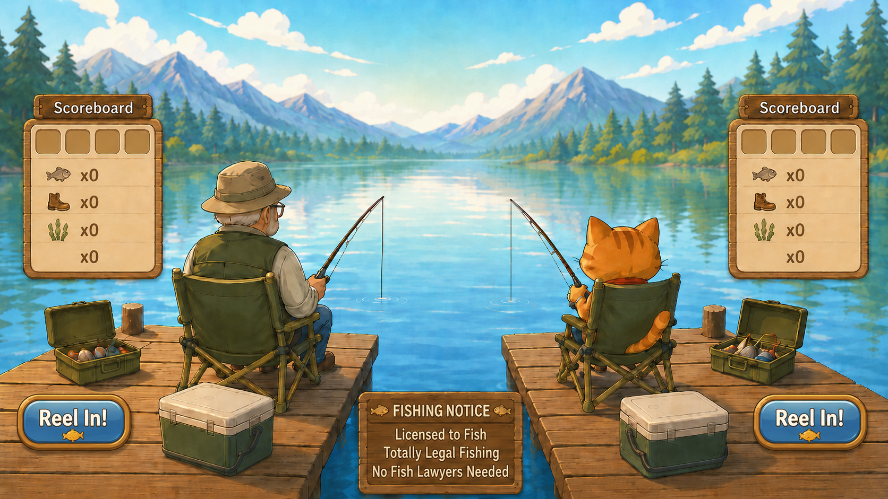

Project Concept
For this project, I redesigned the original dice-based game idea into a fishing-themed interactive experience. The game begins with a landing popup that says “Fishing Today” and a “Go!” button. After entering the main scene, two players sit beside a lake and take turns fishing.
Each player has a cooler for storing fish and a visual scoreboard that tracks how many fish they have caught. Instead of rolling dice, players use fishing interactions. When a player reels in the fishing rod, the game randomly generates either a fish, which adds one point, or a miss item such as a boot, seaweed, or nothing. The first player to catch five fish wins.
Thumbnail Sketches
These five quick sketches explore different layout ideas, screen states, and interaction moments for the fishing game.
Thumbnail 1

Landing popup idea with “Fishing Today” and a start button.
Thumbnail 2

Main game layout with two players, fishing rods, coolers, and scoreboards.
Thumbnail 3

Casting interaction state and button placement exploration.
Thumbnail 4

Reeling interaction state with possible results such as fish or junk items.
Thumbnail 5

Ending popup and cooking result screen after one player wins.
Digital Design Comp
The design comp refines the sketch into a more polished visual direction. It includes color, type, image placement, interface layout, and popup style.

Digital comp created for a viewport of approximately 1200 × 750 pixels.
Interaction Notes
- The player clicks “Go!” on the landing popup to enter the main fishing scene.
- Players take turns fishing beside the lake.
- Clicking the fishing action changes the character or rod illustration to show movement.
- Each reel action randomly results in a fish, boot, seaweed, or nothing.
- A fish adds one point to the current player’s score.
- The first player to catch five fish wins.
- After the winner is decided, the fishing controls change into a “Go Home” button.
- The final popup shows the fish cooking result and ends the game experience.
Design Considerations
The interface is designed for a maximum viewport of around 1200 × 750 pixels. The main game screen should fit inside the viewport without scrolling, unless scrolling becomes part of the game experience. The design uses a soft outdoor color palette, rounded interface elements, and illustrated objects to create a calm and playful fishing atmosphere.